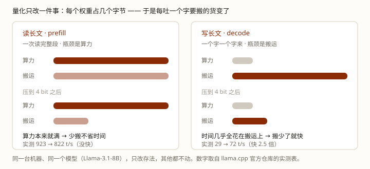

前面四课都在讲怎么少浪费时间。这一课讲其中最直接的一招：把模型压小。可它只让一半的动作变快——吐字快了，读长文几乎不变。
你大概听说过这么一件事：几年前笔记本根本跑不动的大模型，现在塞进普通电脑就能跑了。而且模型名字后面还挂着一串看不懂的东西——Q4_K_M、int8、FP8。
那串东西是什么？一句话：它在告诉你，模型里每个数要用几个「比特」来存（一个比特就是一个 0 或 1）。这些「数」就是权重——训练学出来的那几十亿个数。Q4 就是每个数只用 4 个比特，int8／FP8 是留 8 个——原来那种老实的存法要 32 个，体积当然一下就下来了。
先拆穿一个误解：它不是「把文件压缩一下」。压缩（zip）压完还能解压还原，而它是把原来的数换掉，取不回来了——拿模型的一点点"记性"，换体积和速度。
真正反直觉的是这个：所有人都说它能让模型变快，可它只让一半的动作变快。模型「吐字」快了，「读长文」几乎一点不快。
学完这课，你能看懂模型名里那些后缀、说清它改了什么、又会掉什么，也知道什么时候不该压到极限。
量化只改一件事：模型里每个权重占几个字节。而模型每吐一个字，都要把整张权重表整个搬一遍——所以字节少了，吐字就快。
另一半（读长文）为什么不受益？因为那一段显卡忙着算，本来就没空理搬运的事。后面每一节都挂回它。
第 0 课说过，模型里唯一的东西就是一大堆数字。这一课压的那些数，正式名字叫权重（也叫参数）——训练一遍遍拧出来的那些表，连第 1 课那张「拿编号查第 N 行」的嵌入表也在里头。（这不是猜的：压模型的那个工具，说明书里把一张张表都列了名字——连「每个字的表」和出口那张打分表，都能单独指定压法。）
它们现在用 float32 存：每个数占 4 个字节（4 个字节＝32 个比特），所以一个 8B 的模型光数字就要 32 GB。量化的做法很朴素：少给每个数留几个比特。留几个，是个选择——留 8 个比特，就有 256 种组合；留 4 个，就只剩 16 种。组合越少，能记的值就越少，于是每个数只能记成离它最近的那个：0.1237 也许就记成了 0.125，抹掉的零头再也找不回来。（模型名里的 Q8／Q4／int8／FP8，说的就是留了几个比特。）
这就像把一张 1600 万色的照片改成只用 16 种颜色：图小了几十倍、还看得出是什么；但相近的颜色被并成了同一种，渐变糊成一块块，细节最先没。图小了是赚到的，细节没了是赔掉的。
这一步的正式名字叫量化（quantization）。「量化」的意思就是「把连续的量变成离散的几种值」——精度是在这一步被切掉的。所以它永远是一道选择题：省多少，换掉多少精度，没有「又快又好又不掉」的做法。
范围也要划清一句：压的是「存起来的权重」，不是「算出来的数」。模型跑起来临时算出来的那些数——逐层改出来的向量（术语叫激活）、还有第 3 课那套 KV——存法不在这笔账里。不过它们的数值会被波及：毕竟是用压过的权重算出来的。（所以 int4 的模型，KV 不是 4 bit——它跟激活一个档，默认 16 bit。想让 KV 也小，要另外打开一个开关，那是另一笔账。）
压过之后的效果，是一笔实打实的体积账。下面是 llama.cpp（一个开源的模型运行工具——本课的实测数字就是拿它测的）自己公布的实测（同一个模型，压成 4 bit 那一档之后）：
| 模型 | 原体积 | 压到 4 bit 之后 |
|---|---|---|
| 8B | 32.1 GB | 4.9 GB |
| 70B | 280.9 GB | 43.1 GB |
| 405B | 1,625.1 GB | 249.1 GB |
「小模型能塞进笔记本」这件事，一大半是量化给的。
（真去下载的时候还会撞上一件事：压法不止一种，文件互不通用、还挑显卡——「压法」到底是什么？哪种压法认哪些卡？）
这一节是本课的关键，它把前四课串起来了。先接上第 2 课的结论：模型写答案那一段，卡在「搬数据」上，不在「算」上——术语叫显存带宽受限。（那个「≈1」的算术强度是怎么算出来的？→ 看第 2 课进阶 · Q2）
那「搬数据」搬的到底是什么？模型每吐一个字，都要把整张权重表从显存里整个搬一遍。表有多大，一个字就得搬多少——算的时间很短，搬的时间很长，所以这一段的快慢，几乎全由搬运决定。
那么，把前四课的招数按「它砍掉了什么」重新排一遍，位置立刻清楚了：
| 招数 | 它砍掉的是 |
|---|---|
| KV Cache / 缓存命中 | 重复的算（省了计算，没省搬运） |
| 批处理 | 让多个请求共用同一次搬运（一次搬，服务多个人） |
| 量化 | 搬运量本身（货变轻了，每趟搬的就少） |
所以判断任何一个优化有没有用，只要问一句：它砍的是「搬」还是「算」？砍「搬」的治「吐字慢」，砍「算」的治别的。量化是这张表里唯一直接砍搬运量的——这就是它快的全部原因。
这条结论必须用实测说，因为它是反直觉的。同样一台机器、同一个模型（Llama-3.1-8B，一个开源的大模型）、只改存法，其他什么都不动：

| 同一台机器，每秒吐几个字 / 读完几个字 | 原样（float16） | 压到 4 bit 那一档 |
|---|---|---|
| 读长文（一次读 512 个字） | 923 | 822 （没快） |
| 吐字（一个字一个字来） | 29 | 72 （快 2.5 倍） |
为什么左边不涨反跌？因为读长文那一段是「算力受限」——显卡的算力本来就打满了，多出来的空档它没有。你把货搬轻了，省下的搬运时间并不能兑现成速度。而吐字那一段是「带宽受限」，时间几乎全花在搬运上，货一轻，时间就跟着少。
这就是第 2 课那句「算力受限 / 带宽受限」的实测版。那一课是推导出来的，这一课是量出来的——两句说的是同一件事。
落到你手上的活，判断就一条：模型回答长、输入短（聊天、写代码、写长报告）——量化收益明显；模型输入长、回答短（塞一大资料的 RAG、很长的系统提示）——别指望量化。这种场景的慢在「读」那一段，要去治它，那是第 2 课和第 3 课的地盘（缓存、稳定前缀）。
省字节的代价，第 1 节说过一句：每个数只能记成那 16 个可挑的值里的一个。可「被并掉的差别」到底伤在哪？这里有个比「精度掉了一点」重要得多的发现。
脚本第 3 节量了这件事，结果是：大数几乎没受影响，小数被压扁了——绝对误差到处都差不多，但除以自己的量级，普通列差 4%，大列只差 0.2%。换句话说，模型不是「均匀地变糊」，而是有的地方几乎没伤着、有的地方伤得特别重。
还有一笔容易被忽略的账：「4 bit」其实不止 4 bit。存这些数的时候，还得附一份换算说明（记着这些值怎么还原回去），那份说明自己也要占地方。llama.cpp 公布的实测是：Q8_0 占 8.50 bit，Q4_K_M 占 4.89 bit——名字上写 4 bit，真实占用接近 5 bit。
这就是量化的账：省下来的是体积；赔进去的是精度，而且赔得不均匀——小的先遭殃。省下的那头也别记错：名字上写 4 bit，实际接近 5 bit。那赔掉的精度到底「糊」在哪一头？下一节拿实测说话。
上一节说了，赔进去的是「精度」。那到底赔在哪一头？很多人第一反应是：无非是字写得没那么准——错个字、换个近义词，读着还行。可实测出来的不是这样。
有人拿最常见的两种压法（叫 AWQ、GPTQ，它们各是怎么压的）把开源大模型压到低比特，丢去做数学题：准确率平均掉 11.3%，最狠的一组掉 32.4%；更难的设置里，掉幅到过近 70%。「答得对不对」是真会掉的。而且 llama.cpp 衡量「压了掉不掉」，用的本来就是猜下一个字猜得准不准（perplexity／KLD）——那是语义层面的尺子，跟「字写得准不准」不是一回事。
不过掉的位置有偏向。把出错的题一条条归类，两条规律很稳：「方法／执行」类的错明显变多（多步算术算错、边界条件处理错），「概念理解」类的错变化不大；而且错是从最早出错的那一步开始、一路滚到底的。大白话：它多半不是「看不懂」，是「算不对、写不准」。
于是最容易暴露问题的，是逐个字都要对的活：严格的 JSON、必须一字不差的函数名、精确的数字、很长的指令遵循。回到第 1 节那张 16 色的比方：看大效果的活，糊一点看不出来；要逐个字对的活，糊一点就全废——错一个字符，整段作废。
（「哪类活最容易掉」还没有直接的对照实测，上面那句是实践观察。有人把 13 份考题一起评过一遍，说得更准：难的题不一定掉最多，量化是放大模型本来的弱点——掉得明显的几类是听话照做、识别胡编、写代码、理工科题。顺手能用的另外两条：8 bit（FP8）是各任务上最稳的一档；小模型压到 4 bit 掉得狠，70B（700 亿个数）那种大的反而稳。出处）
有一类活正好撞在枪口上：工具调用。它要求模型吐出一份结构严格的 JSON（哪个工具、参数是什么）——正是「逐个字都要对」的那一类。
所以这一节要交给你的不是「压到哪一档」的口诀，而是一条判断：压得越狠，越要在自己的任务上实测。至于上线之前测什么、怎么留余量，那是你自己的活，写在技巧篇 0002 · 技巧六里。
脚本在工作区：exercises/llm/0006-quantization.py。它只用 Python 自带的功能（不用装任何插件），离线能跑，做了三件事：造一张带"大数列"的权重表、用三种分组法压一遍并量误差、再把第 0 课那个真训练出来的玩具模型压一遍看扣分变没变。
python exercises/llm/0006-quantization.pyWindows 终端若中文乱码，先执行 chcp 65001。下面是输出摘录（跑了就有完整的）。
[2] 换一种存法：float32 -> int8（整张表共用一套取值）
float32：每个权重 32 bit = 4 字节 -> 全表 16384 字节
int8 ：每个权重 8 bit = 1 字节 -> 全表 4100 字节（含 4 字节换算说明）
体积掉到 25.0%，但每个数只能记成 0.2379 的整数倍
最大误差 0.1189，平均误差 0.0598，一半的列相对自己量级差 3.4%
[3] 误差出在哪：绝对误差到处都差不多，差的是「相对自己量级」
列 这一列最大值 平均绝对误差 相对误差
0 1.520 0.0610 4.0%
1 1.501 0.0466 3.1%
2 1.736 0.0505 2.9%
42 30.210 0.0719 0.2%
130 23.474 0.0394 0.2%
——绝对误差都是 0.06 上下，一模一样；可是除以自己量级，
普通列差 3~4%，大列只差 0.2%。被压扁的是小数，不是大数。
[6] 换成真实模型的账：一个 8B 参数的模型，各种存法各占多大
存法 每个权重 8B 模型体积 相对 float32
float16 16 bit 16.0 GB 50.0%
int8 8 bit 8.0 GB 25.0%
int4（每 32 个一组） 4 bit 4.5 GB 14.1%
——换算说明的开销已经算进去了：4 bit 那行是 4.50，不是 4.00；8 bit 那行是 8.50。
llama.cpp 公布的实测值是 Q8_0 = 8.5008，跟这里一模一样（课里会用到）。
float32（没压） 平均扣分 0.5989
int8（每行一组） 平均扣分 0.5992 变化 +0.0003
int4（每行一组） 平均扣分 0.6012 变化 +0.0023
四个候选的百分比基本照旧，连排序都没变。
——别急着把它读成「量化不掉能力」。这个玩具只有 18 道题、7 个候选字，
「能力」只有一个平均扣分，太粗了。真模型上能力是用几万道题测的，
那里掉一点就是掉分数——所以各家论文都要跑一整套考题才敢下结论。
四处要看懂：
Q1 量化到底改动了模型的什么？
Q2 同一个模型压到 4 bit，「读长文」那一段会变快吗？
Q3 模型名写着「4 bit」，为什么实际占用通常接近 5 bit？
Q4 「挑着压」这个说法，指的是什么？
Q5 同样压到 4 bit，下面哪种活最容易掉链子？
上面这些够你看懂全貌了。读的过程中如果冒出疑问，点对应的链接就行——不用从头看进阶版。
tools/quantize/README.md——本课最重要的一条实测来源：Llama-3.1-8B 在同一台机器上的完整实测表（每档的 bits/weight、体积、prefill 与 decode 速度）。第 1 节的体积表、第 3 节的速度表，以及第 4 节那两个 bit 数（Q8_0 8.50 / Q4_K_M 4.89）都出自这里。bos 记号敏感，第 5 节那两条出自这里。--cache-type-k／--cache-type-v（"KV cache data type for K/V"）default: f16；vLLM 的 cache_dtype 默认 "auto"＝"will use model data type"。想让 KV 也小是另一个开关：vLLM kv_cache_dtype／llama.cpp --cache-type-k。两条都在 RESOURCES.md。RESOURCES.md 里。
Q4_K_M 那个文件？""要是我只做摘要，压狠一点行不行？""量化会不会让同一个问题两次答案不一样？"
同课进阶：进阶版 · 压法是什么、KV 是什么精度
前置：LLM 底层 · 第 2 课 · prefill 与 decode（本课第 2、3 节全挂在它那条「带宽受限」上）· 第 4 课 · 批处理（另一个砍搬运的招数，对照着看）
回上一课：LLM 底层 · 第 5 课 · 它真的在思考吗？——那一课讲的是「多花 token 换准确率」这笔账；从这一课起我们回到成本这条线，讲「少花字节换速度」。两件事都是在做交易，但一个动的是能力，一个动的是存法。
顺着往下：LLM 底层 · 第 7 课 · 蒸馏——改「从哪来」的那一件，正好和本课「改怎么存」凑成一对
这条轨道：课程目录 · 换个角度：技巧篇 0002 · 怎么判断一个 agent 好不好用（换过量化档之后，要重新测什么）
术语表：量化 · 激活 · 显存带宽